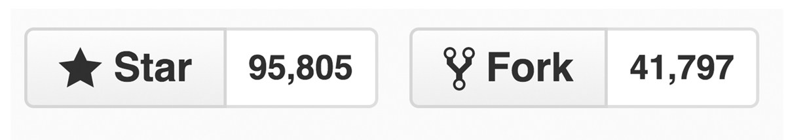

Building With Bootstrap
Welcome!
Girl Develop It is here to provide affordable and accessible programs to learn software through mentorship and hands-on instruction.
Some rules:
- We are here for you!
- Every question is important
- Help each other
- Have fun
Introductions
Meet your instructor
Meet your TAs
Meet each other
- Who are you?
- What do you do?
- How did you hear about GDI?
- Have you worked with Bootstrap before?
What we’ll be covering today
- Downloading Bootstrap and adding it to an HTML document
- Working with Bootstrap’s responsive grid system
- Styling images and buttons with Bootstrap classes
- Working with Bootstrap’s reusable user interface components
- If we have time: incorporating one of Bootstrap’s JavaScript plugins into your resume
What we will NOT be covering today
- Custom Bootstrap theme development
- Styling CSS on top of what comes default with Bootstrap
- Using every Bootstrap component and JavaScript plugin
So what is Bootstrap?
Bootstrap is a front end framework that helps speed up the development of responsive websites.
What is Bootstrap?
Bootstrap is one of the most popular front end frameworks with 95,000+ stars and over 41,000 forks.
It’s an open source project on GitHub, meaning it is free to use and anyone can contribute to its progress.
What is a front end framework?
A front end web framework is a collection of flexible, production-ready HTML, CSS, and JavaScript that we can use when we develop websites and applications.
Keep in mind that Bootstrap is not just a CSS grid. It also comes with components to build a fully-functional, visually-consistent website.
Why would I want to use Bootstrap?
Bootstrap is designed to be responsive, which means that your HTML elements will respond to changes in screen size.
So this desktop design

Also looks good on a tablet

And rad on a smartphone!

Why would I want to use Bootstrap?
Bootstrap is also mobile-first, which means that it prioritizes ease of viewing at a mobile level and builds progressively for larger screen sizes.
Best of all, Bootstrap allows designers & developers of all levels to build sites quickly.
What comes with Bootstrap?
If you haven’t already, download the project files by going to !!!PROJECTFILESLINK!!!.
Unzip the building-with-bootstrap.zip file and move the folder somewhere handy (in a sites folder, on your desktop, etc.).
Open Sublime Text, then open your building-with-bootstrap folder.
Find the bootstrap folder within your project directory. Toggle the arrow next to it to reveal its contents. Keep toggling the subfolders until you can see all the files.

Base CSS
- Global CSS settings
- Styling for fundamental HTML elements such as tables, forms, buttons, and images
- The grid system
Components
Styles for common reusable components
JavaScript
jQuery-based JavaScript plugins for interactive elements such as tooltips, modal windows, and carousels
Let’s talk about the Bootstrap grid system
Bootstrap’s grid system is its most powerful and widely used feature.
The grid system is based on a 12-column grid and uses CSS classes to decide the width of each HTML element they’re applied to.

Each element can take up between 1 and 12 columns-worth of space.

Some grid system rules
- Rows must be placed within a .container (fixed-width) or .container-fluid (full-width) for proper alignment and padding
- Use .row elements to create horizontal groups of columns
- Content should be placed within columns, and only columns may be immediate children of rows
<div class="container">
<div class="row">
[CONTENT FOR ROW]
</div>
</div>
or
<div class="container-fluid">
<div class="row">
[CONTENT FOR ROW]
</div>
</div>
See it in action
Open up slide-demo/container.html in your browser.
Resize your browser to see where the columns break to fit 100% of the width.
See it in action
Open up slide-demo/container-fluid.html in your browser.
Resize your browser to see where the columns break to fit 100% of the width.
Column classes

If you want to have two 50% columns on a mobile phone, you would use .col-xs-6 nested in a .row, and the rows would be consistent on every device.

2 50%-width columns
<div class="container">
<div class="row">
<div class="col-xs-6">
[COLUMN 1 CONTENT]
</div>
<div class="col-xs-6">
[COLUMN 2 CONTENT]
</div>
</div>
</div>
If you want to have four 25% columns on a desktop, and would like them to break to 100% on a tablet, you would use .col-md-3 nested in a .row.

4 25%-width columns
<div class="container">
<div class="row">
<div class="col-md-3">
[COLUMN 1 CONTENT]
</div>
<div class="col-md-3">
[COLUMN 2 CONTENT]
</div>
<div class="col-md-3">
[COLUMN 3 CONTENT]
</div>
<div class="col-md-3">
[COLUMN 4 CONTENT]
</div>
</div>
</div>
Develop it
Open slide-demo/index.html in Sublime Text.
Find bootstrap.css inside the bootstrap/ folder, and add it to the head of index.html.
<head>
<meta charset="UTF-8">
<title>Building with Bootstrap Demo - GDI Minneapolis</title>
<link rel="stylesheet" href="../bootstrap/css/bootstrap.css">
</head>
Create a 2-column layout that will break down to 100% on small devices.
<body>
<div class="container">
<div class="row">
<div class="col-sm-6">
Content
</div>
<div class="col-sm-6">
Content
</div>
</div>
</div>
</body>
Open index.html in your browser and resize to see how the columns respond.
Ok, but how is it doing that?!
Media queries
Media query is a CSS technique introduced in CSS3.
It lets you add breakpoints where certain parts of the design will behave differently on each side of the breakpoint.
Bootstrap uses the breakpoints 768px, 992px, and 1200px
Take a peek at Bootstrap’s media queries
Open bootstrap/css/bootstrap.css
Scroll to line 1616
This is where the grid system is defined in the CSS.
A couple basic Bootstrap components
Images
Images can be made responsive with .img-responsive, which adds max-width: 100% and height: auto to scale the image to its parent container.
Other styling classes: .img-rounded, .img-circle (only works on square images), and .img-thumbnail
Develop it
Add some responsive images to your columns in slide-demo/index.html
Add a styling class to at least one of the images.
<img src="images/puppies.jpg" alt="Puppies!" class="img-responsive">
<img src="images/donut.jpg" alt="Yummy donut" class="img-responsive img-circle">
Buttons
http://getbootstrap.com/css/#buttons
The button class .btn can be used on <button/>, <input/>, or <a/> elements.
Additional classes can be used to provide extra visual weight and indentify primary button actions:
.btn-default, .btn-primary, .btn-success, etc.
Develop it
Add some buttons or links with the button class to your columns in slide-demo/index.html
Add a styling class to at least one of the buttons.
<button class="btn btn-default">This is a button</button>
<a href="btn btn-primary">This is a link but it looks like a button</a>
Time to put this all to use!
We’ll be making a simple resume site using Bootstrap’s grid system and components.
We’ll be working in the resume/ folder inside your project directory.
The source code (finished version) of the resume is in the resume-source-code/ folder in case you get stuck.
Open resume/index.html in Sublime Text.
Find bootstrap.css inside the bootstrap/ folder, and add it to the head of index.html.
<head>
<meta charset="UTF-8">
<title>Resume Site - Building with Bootstrap - GDI Minneapolis</title>
<link rel="stylesheet" href="../bootstrap/css/bootstrap.css">
</head>
Nav
Add a <nav> to the <header>
Add a fluid container to the <nav>
Add an unordered list to inside the container, and create 5 list items inside that.
Nav
<header>
<nav>
<div class="container-fluid">
<ul>
<li></li>
<li></li>
<li></li>
<li></li>
<li></li>
</ul>
</div>
</nav>
</header>
Nav
Inside each <li> add a link, but just add # as a placeholder inside the href attributes for now.
Inside each link add one of these section titles: About, Skills, Experience, Education, Portolio
<ul>
<li><a href="#">About</a></li>
<li><a href="#">Skills</a></li>
<li><a href="#">Experience</a></li>
<li><a href="#">Education</a></li>
<li><a href="#">Portfolio</a></li>
</ul>
Nav
Open resume/index.html in your browser.
We want to restyle our nav links and can do it using built-in Bootstrap classes.
Browse the documentation for a few minutes and see if you can figure out which classes to use to:
- Remove the bullets
- Display the links next to each other instead of stacked
Nav
<ul class="list-inline">
<li><a href="#">About</a></li>
<li><a href="#">Skills</a></li>
<li><a href="#">Experience</a></li>
<li><a href="#">Education</a></li>
<li><a href="#">Portfolio</a></li>
</ul>
Jumbotron
Add a jumptron element after the <nav>
Inside the jumbotron, add a heading 1 with your name, and a paragraph element with your job title.
Make your job title stand out with a .lead class.
Jumbotron
<div class="jumbotron">
<h1>Your Name</h1>
<p class="lead">Your Job Title</p>
</div>
Jumbotron
Open resume/index.html in your browser.
Things would probably look better if the content in the <header> was all centered.
Browse the docs to find a class that will center the text of an element.
<header class="text-center">
...
</header>
Refresh your browser to see if it worked.
Setting up our sections
Create a section with a nested .container
Add 2 columns, one with a class of .col-md-3 and the other with the class of .col-md-9
Let’s add some comments to describe what content we want to put inside each column.
<!-- title column -->
<div class="col-md-3"></div>
<!-- content column -->
<div class="col-md-9"></div>
Setting up our sections
Copy and paste the section we just created until you have 5 of them.
Inside the title columns of each add a heading 2 element with the section title from the corresponding nav link.
Setting up our sections
<section>
<!-- title column -->
<div class="col-md-3">
<h2>About</h2>
</div>
...
</section>
<section>
<!-- title column -->
<div class="col-md-3">
<h2>Skills</h2>
</div>
...
</section>
...